Robustness and Sensitivity of Feedback
System Modeling and Control · Chapter 17
Contents
Output Feedback of the Cart Position
Robustness, Sensitivity, and Disturbance Rejection
Right-Half-Plane Poles and Zeros
Bode and Poisson Sensitivity Integrals
State Feedback, Integral Action, and State Estimation
Robustness - Small changes in the model parameters make the CL system unstable.
Sensitivity - Small disturbances cause the outputs to vary far from their final values.
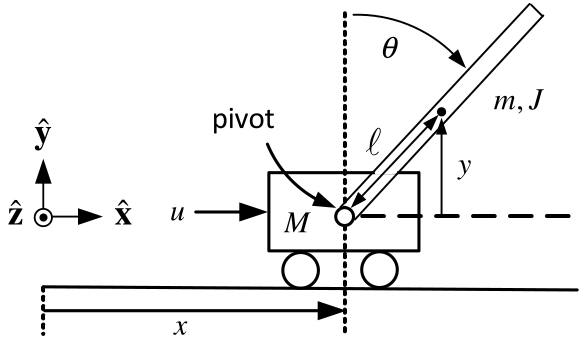
\[\begin{aligned} X(s) &=\text{}\underset{G_{X}(s)}{\underbrace{\frac{\kappa (J+m\ell ^{2})s^{2}-\kappa mg\ell }{s^{2}(s^{2}-\alpha ^{2})}}}U(s)+\frac{-\kappa g(m\ell )^{2}(s\theta (0)+\dot{\theta}(0))+(s^{2}-\alpha ^{2})(sx(0)+\dot{x}(0))}{s^{2}(s^{2}-\alpha ^{2})} \\ \theta (s) &=\text{}\underset{G_{\theta }(s)}{\underbrace{-\frac{\kappa m\ell }{s^{2}-\alpha ^{2}}}}U(s)+\frac{s\theta (0)+\dot{\theta}(0)}{ s^{2}-\alpha ^{2}} \\ \alpha ^{2} &=\frac{mg\ell (M+m)}{Mm\ell ^{2}+J(M+m)},\kappa = \frac{1}{Mm\ell ^{2}+J(M+m)}. \end{aligned}\]
Feedback of only the cart position \(x\).
The inverted pendulum has an open-loop pole \(p\) and an open-loop zero \(z.\) \[p=\alpha =\sqrt{\frac{mg\ell (M+m)}{Mm\ell ^{2}+J(M+m)}},z=\sqrt{ \frac{mg\ell }{J+m\ell ^{2}}}.\] With \(J=m\ell ^{2}/3\) these become \[\begin{aligned} p &=\sqrt{\frac{mg\ell (M+m)}{Mm\ell ^{2}+(m\ell ^{2}/3)(M+m)}}=\sqrt{\frac{ 3}{4}\frac{g}{\ell }}\sqrt{\frac{M+m}{M+m/4}} \\ z &=\sqrt{\frac{mg\ell }{m\ell ^{2}/3+m\ell ^{2}}}=\sqrt{\frac{3}{4}\frac{g }{\ell }}. \end{aligned}\]
- The Quanser values \(M=0.57,m=0.23,\ell =0.3207. \Longrightarrow \sqrt{\dfrac{M+m}{M+m/4}}=\sqrt{\dfrac{0.57+0.23}{ 0.57+0.23/4}}=1.129\)
Open-Loop Model \[G_{X}(s)=\frac{\kappa (J+m\ell ^{2})s^{2}-\kappa mg\ell }{s^{2}(s^{2}-\alpha ^{2})}=\frac{1.59s^{2}-36.57}{s^{2}(s^{2}-29.25)}=1.59\frac{ (s-4.7958)(s+4.7958)}{s^{2}(s-5.408)(s+5.408)}\]
Pole Placement Controller \[G_{c}(s)=\frac{b_{3}s^{3}+b_{2}s^{2}+b_{1}s+b_{0}}{ s^{3}+a_{2}s^{2}+a_{1}s+a_{0}}\]
Placing the seven closed-loop poles at \(-5\) results in \[\begin{aligned} G_{c}(s) &=\frac{4262s^{3}+22579s^{2}-2991s-2137}{s^{3}+35s^{2}-6240s-30583} =4262\frac{(s+5.4086)(s-0.3668)(s+0.2533)}{(s+96.4235)(s-66.2137)(s+4.7902) }. \end{aligned}\]
- \(G_{c}(re^{j\theta })G_{X}(re^{j\theta })\approx \dfrac{-2137}{-30583} \dfrac{-36.57}{-29.25}\dfrac{e^{-j2\theta }}{r^{2}}=0.087\dfrac{e^{-j2\theta }}{r^{2}}\)
\[G_{c}(s)G_{X}(s)=4262\frac{(s+5.4086)(s-0.3668)(s+0.2533)}{ (s+96.4235)(s-66.2137)(s+4.7902)}1.59\frac{(s-4.7958)(s+4.7958)}{ s^{2}(s-5.408)(s+5.408)}.\]
Nyquist Plot
\(P=2\) and \(N=-2\Longrightarrow Z=N+P=-2+2=0.\)
The closed-loop system is stable (We already knew this!).
Gain and Phase Margins
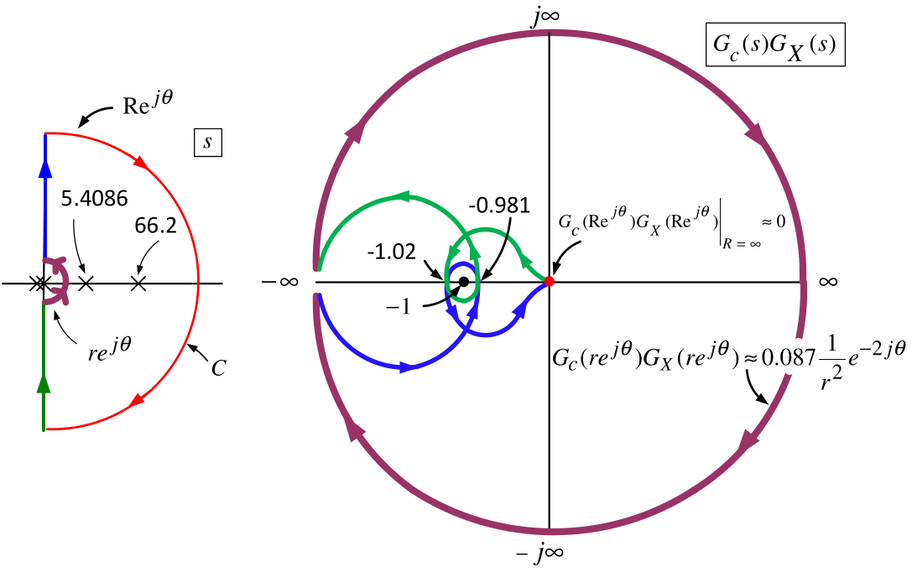
The closed-loop system \(\dfrac{KG_{c}(s)G_{X}(s)}{1+KG_{c}(s)G_{X}(s)}\) is stable only for \[-1.02<-1/K<-0.981 \; \text{ or } \; \frac{1}{1.02}=0.980\,<K<1.019= \frac{1}{0.981}!\] The phase margin is only of the order \(\tan ^{-1}(0.02/1)=0.02\) radians or \(1.15\) degrees!
Robustness
The controller can be implemented accurately using a microprocessor.
Is our model \(G_{X}(s)\) accurate enough?
E.g., the approximate linearized model might be closer to \(0.98G_{X}(s).\)
- If so, our controller \(G_{c}(s)\) will result in an unstable CL system!
This controller is not robust to small uncertainty in the IP model.
Sensitivity
Suppose the model \(G_{X}(s)\) is very accurate around the (pendulum up) operating point.
The controller \(G_{c}(s)\) would (in all likelihood) still not work in practice!
Zoom in on the Nyquist plot to understand why.
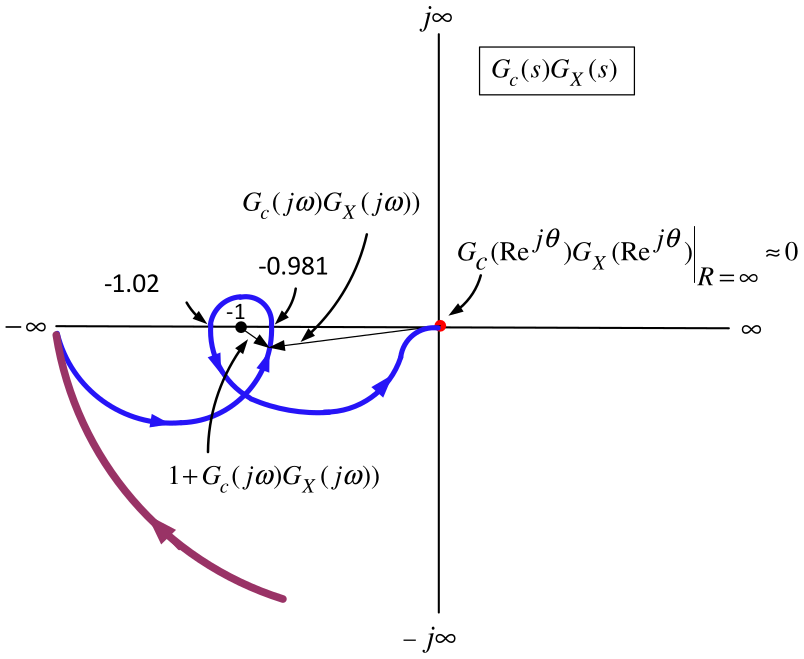
\(1+G_{c}(j\omega )G_{X}(j\omega )\) is a vector (complex number) from \(-1+j0\) to \(G_{c}(j\omega )G_{X}(j\omega ).\)
For some frequencies the length of this vector is very small (about \(0.02\)).
Bode diagram for \(G_{c}(j\omega )G_{X}(j\omega )\).
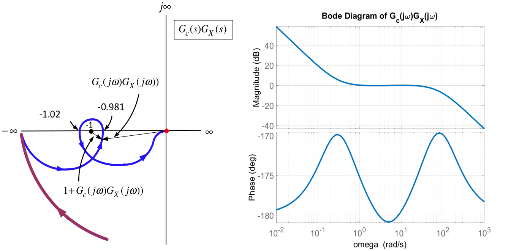
\(G_{c}(j\omega )G_{X}(j\omega )\) is very close to \(-1+j0\) for the frequency range \(0.8\leq \omega \leq 12\).
Equivalently, \(|1+G_{c}(j\omega )G_{X}(j\omega )|\) is quite small for the frequency range \(0.8\leq \omega \leq 12\).
The sensitivity is defined to be \[S(j\omega )\triangleq \frac{1}{1+G_{c}(j\omega )G_{X}(j\omega )}.\]
Bode diagram
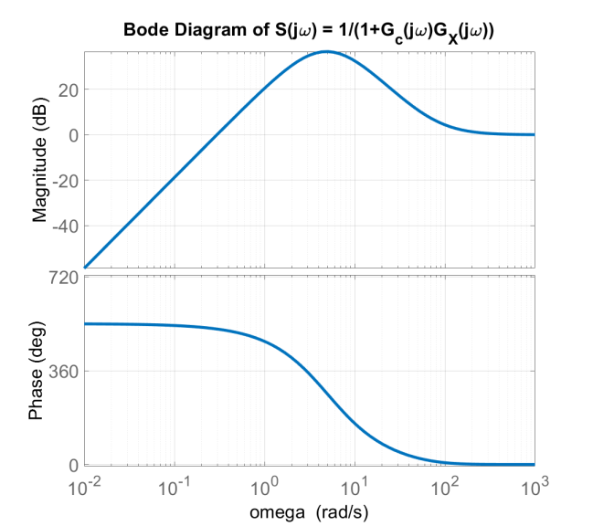
\[\begin{array}{ll} |S(j\omega )|>1\text{ (0 dB)} & \text{for } \; \omega >0.25\text{} \\ |S(j\omega )|>10\text{ (20 dB)} & \text{for } \; 1<\omega <25 \\ \max\limits_{\omega }|S(j\omega )|=66.8\text{ (}36.5\text{dB)} & \text{for } \; \omega =5. \end{array}\]
Sensitivity of the Cart Position \(\mathbf{x}\) \[X(s)=\underset{G_{CL}(s)}{\underbrace{\frac{G_{c}(s)G_{X}(s)}{ 1+G_{c}(s)G_{X}(s)}}}X_{ref}(s).\]
In the frequency range \(0.8<\omega <12\) \[|S(j\omega )|=\left\vert \dfrac{1}{1+G_{c}(j\omega )G_{X}(j\omega )} \right\vert >10.\]
Thus \(\left\vert 1+G_{c}(j\omega )G_{X}(j\omega )\right\vert <0.1\) and \(\ 0.9<|G_{c}(j\omega )G_{X}(j\omega )|<1.1\) \(\Longrightarrow\)
\[\left\vert \dfrac{G_{c}(j\omega )G_{X}(j\omega )}{1+G_{c}(j\omega )G_{X}(j\omega )}\right\vert >(10)(0.9)=9.\]
With \(R_{0}=0.1\) and \(\omega =0.8\) (\(0.13\) Hz) set \(r(t)=R_{0}\sin (\omega t)\).
Then \[x(t)\rightarrow x_{ss}(t)=0.1\underset{9}{\underbrace{|G_{CL}(j0.8)|}}\sin (0.8t+\angle G_{CL}(j0.8))=0.9\sin (0.8t+\angle G_{CL}(j0.8)).\]
In the freq range where \(|S(j\omega )|\) is large, the steady-state response will be large.
Sensitivity of the Pendulum Rod Angle \(\mathbf{\theta }\)
\[X(s)=\text{}\underset{G_{X}(s)}{\underbrace{\frac{\kappa (J+m\ell ^{2})s^{2}-\kappa mg\ell }{s^{2}(s^{2}-\alpha ^{2})}}}U(s),\qquad \theta (s)=\text{}\underset{G_{\theta }(s)}{\underbrace{-\frac{\kappa m\ell }{s^{2}-\alpha ^{2}}}}U(s)\]
The transfer function from \(\theta (s)\) to \(X(s)\) is \[\begin{aligned} X(s)=G_{X}(s)U(s)=G_{X}(s)\frac{1}{G_{\theta }(s)}\theta (s) &=\frac{\dfrac{ \kappa (J+m\ell ^{2})s^{2}-\kappa mg\ell }{s^{2}(s^{2}-\alpha ^{2})}}{- \dfrac{\kappa m\ell }{s^{2}-\alpha ^{2}}}\theta (s) \\ &=-\frac{(J+m\ell ^{2})s^{2}-mg\ell }{m\ell s^{2}}\theta (s). \end{aligned}\]
Solve for \(\theta (s)\) and use \(X(s)=\dfrac{G_{c}(s)G_{X}(s)}{ 1+G_{c}(s)G_{X}(s)}X_{ref}(s)\) to obtain \[\theta (s)=\underset{G_{\theta X}(s)}{\text{}\underbrace{-\frac{m\ell s^{2}}{\left( J+m\ell ^{2}\right) s^{2}-mg\ell }}}X(s)=\text{}\underset{ G_{\theta X_{ref}}(s)}{\underbrace{G_{\theta X}(s)\frac{G_{c}(s)G_{X}(s)}{ 1+G_{c}(s)G_{X}(s)}}}X_{ref}(s).\]
\[\theta (s)=\text{}\underset{G_{\theta X_{ref}}(s)}{\underbrace{G_{\theta X}(s)\frac{G_{c}(s)G_{X}(s)}{1+G_{c}(s)G_{X}(s)}}}X_{ref}(s).\]
Bode Magnitude Plot (closed-loop poles at -5)
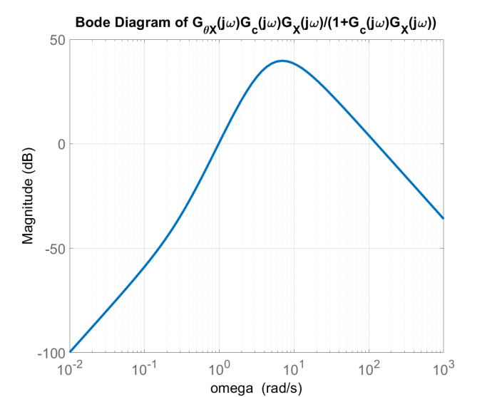
For \(1.9<\omega <39\) the Bode diagram shows \(|G_{\theta X_{ref}}(j\omega )|>10.\)
\(\max\limits_{\omega }|G_{\theta X_{ref}}(j\omega )|=96.7\) (\(39.7\) dB) for \(\omega =7.\)
\[\theta (s)=\text{}\underset{G_{\theta X_{ref}}(s)}{\underbrace{G_{\theta X}(s)\frac{G_{c}(s)G_{X}(s)}{1+G_{c}(s)G_{X}(s)}}}X_{ref}(s).\]
\(X_{ref}(t)=R_{0}\sin (\omega t)\) results in \[\theta (t)\rightarrow \theta _{ss}(t)=R_{0}|G_{\theta X_{ref}}(j\omega )|\sin (\omega t+\angle G_{\theta X_{ref}}(j\omega )).\]
E.g., \(R_{0}=0.02\) meter & \(\omega =7\) (\(1.1\) Hz) \[\theta _{ss}(t)=R_{0}\underset{96.7}{\underbrace{|G_{\theta X_{ref}}(j7)|}} \sin (7t+\angle G_{\theta X_{ref}}(j7))=1.93\sin (7t+\angle G_{\theta X_{ref}}(j7)).\]
\(\theta _{ss}(t)\) is oscillating between \(\pm 1.93\) rads or \(\pm 111^{\circ }!\)
The linear models \(G_{X}(s),G_{\theta }(s)\) are valid for a variation in \(\theta\) of perhaps \(\pm 20^{\circ }\).
If \(\theta (t)\) varies too far from \(0\) then the linear models \(G_{X}(s),G_{\theta }(s)\)
no longer accurately represent the nonlinear model of the pendulum.
\(G_{c}(s)\) in all likelihood won’t stabilize the actual (nonlinear) inverted pendulum.
- Disturbances
The small gear wheel is powered by a DC motor and interacts with the track.
Let \(D(s)\) denote any disturbance due to slippage/backlash between the gear teeth.

\[\begin{aligned} X(s) &=\text{}\underset{G_{XD}(s)}{\underbrace{-\frac{G_{X}(s)}{ 1+G_{c}(s)G_{X}(s)}}}D(s) \\ \theta _{D}(s) &=\underset{G_{\theta X}(s)}{\text{}\underbrace{-\frac{ m\ell s^{2}}{\left( J+m\ell ^{2}\right) s^{2}-mg\ell }}}X(s)=\text{} \underset{G_{\theta D}(s)}{\underbrace{-\frac{G_{\theta X}G_{X}(s)}{ 1+G_{c}(s)G_{X}(s)}}}D(s). \end{aligned}\]
- Disturbances
\(G_{XD}(s)=X(s)/D(s)\) & \(G_{\theta D}(s)=\theta (s)/D(s)\) are stable by design.
The sensitivity \(S(s)\triangleq \dfrac{1}{1+G_{c}(s)G_{X}(s)}\) is a factor of both.
Bode diagram shows for \(0\leq \omega <1\) (\(0\leq f\leq 0.16\)) that \(|G_{XD}(j\omega )|=14\) (\(23\) dB\().\)
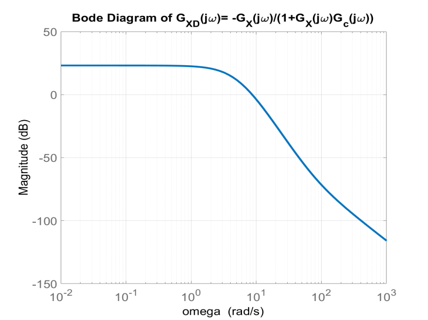
For \(2.8<\omega <4.6\) (\(0.45<f<0.73\)), \(|G_{\theta D}(j\omega )|>5\) (14 dB).
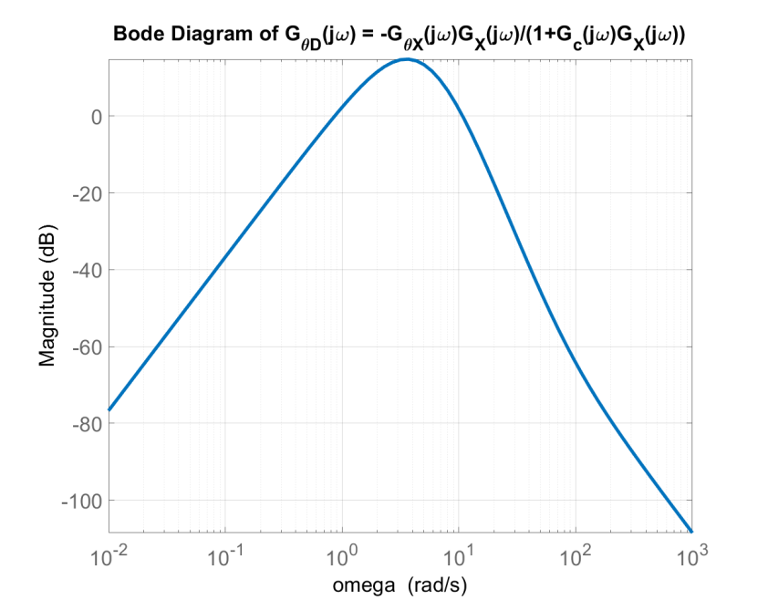
If \(d(t)=0.05\sin (2.8t)\) then \[\theta _{ss}(t)=|G_{\theta D}(j2.8)|(0.05)\sin (2.8t+\angle G_{\theta D}(j2.8))\]
\(|G_{\theta D}(j2.8)|(0.05)>5(0.05)=0.25\) radians or \(14.8^{\circ }.\)
A small disturbance can cause the pendulum angle to swing far from \(\theta =0.\)
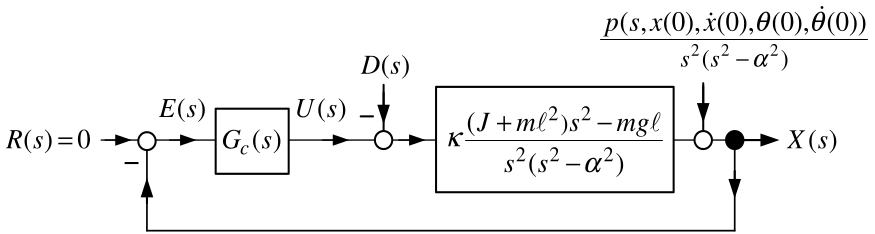
Surprisingly, as shown below, no \(G_{c}(s)\) can fix this sensitivity problem!
The fundamental problem is trying to control the inverted pendulum using only \(x.\)
With \(x\) as output, the transfer function model is \[\frac{X(s)}{U(s)}=G_{X}(s)=\frac{1.59s^{2}-36.57}{s^{2}(s^{2}-29.25)}=1.59 \frac{(s-4.7958)(s+4.7958)}{s^{2}(s-5.408)(s+5.408)}.\]
The inverted pendulum has a pole at \(5.408\) and a zero at \(4.7958\) .
These are in the open right-half plane and are close together in value.
Any stabilizing controller will result in the closed-loop system being
very sensitive to modeling errors, disturbance inputs, reference inputs, etc.
We explain all this in what follows.
- We need to present some theorems on sensitivity.
Theorem \(\int_{0}^{\infty }\log _{10}|S(j\omega )|d\omega =0\) (Bode)
Let \[S(j\omega )=\frac{1}{1+G_{c}(j\omega )G(j\omega )}.\] If
(a) \(S(j\omega )\) is stable
(b) \(G_{c}(j\omega )G(j\omega )\) has no poles in the open right half-plane.
(c) \(G_{c}(j\omega )G(j\omega )=\dfrac{b_{c}(j\omega )b(j\omega )}{ a_{c}(j\omega )a(j\omega )}\) has relative degree of at least 2, i.e., \[\deg \{a_{c}(s)a(s)\}-\deg \{b_{c}(s)b(s)\}\geq 2.\]
Then \[\int_{0}^{\infty }\log _{10}|S(j\omega )|d\omega =0.\]
We work a simple example to illustrate this theorem.
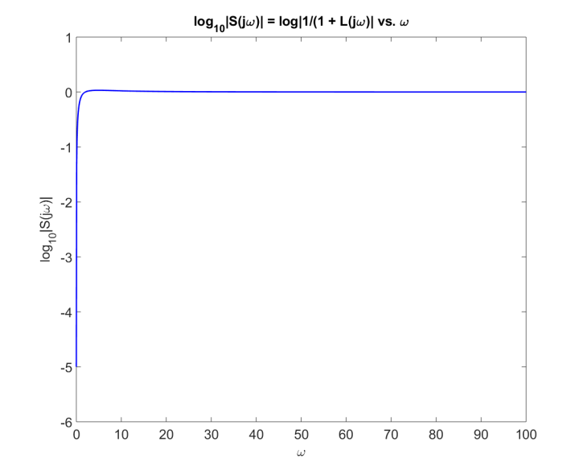
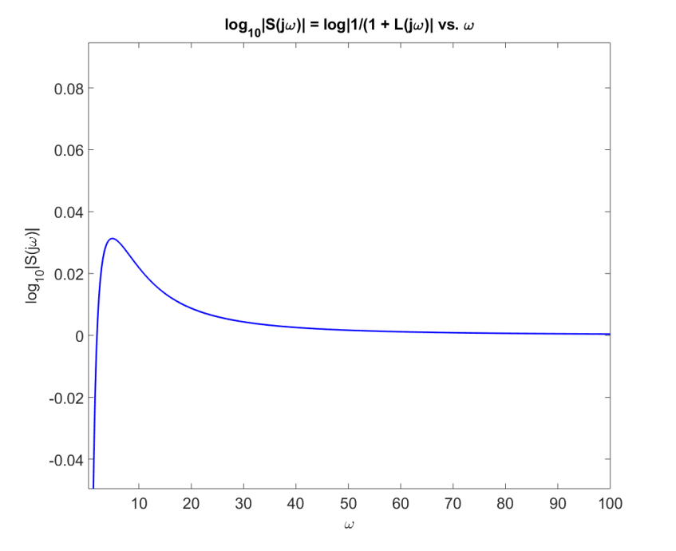
\(G_{X}(s)=\dfrac{1.59s^{2}-36.57}{ s^{2}(s^{2}-29.25)}\)
With \(G_{c}(s)\) designed to place the closed-loop poles at \(-5, G_{c}(s)G(s)\) is \[G_{c}(s)G(s)=4262\frac{(s+5.4086)(s-0.3668)(s+0.2533)}{ (s+96.4235)(s-66.2137)(s+4.7902)}1.59\frac{(s-4.7958)(s+4.7958)}{ s^{2}(s-5.408)(s+5.408)}.\]
The relative degree of \(G_{c}(s)G(s)\) is two.
\(S(s)=\dfrac{1}{1+G_{c}(s)G_{X}(s)}\) is stable by our choice \(G_{c}(s).\)
\(G_{c}(s)G(s)\) has right half-plane poles at \(s=5.408\) and \(66.2137.\)
Theorem \(\ \int_{0}^{\infty }\log _{10}|S(j\omega )|d\omega =\pi \log _{10}(e)\sum_{i=1}^{N_{p}}\operatorname{Re}\{p_{i}\}\) (Freudenberg and Looze)
Let \[S(j\omega )=\frac{1}{1+\underset{L(j\omega )}{\underbrace{G_{c}(j\omega )G(j\omega )}}}.\]
(a) \(S(j\omega )\) is stable
(b) \(G_{c}(j\omega )G(j\omega )\) has \(n_{p}\) poles in the open right half-plane at \(p_{1},p_{2},...,p_{n_{p}}\).
(c) \(G_{c}(j\omega )G(j\omega )=\dfrac{b_{c}(j\omega )b(j\omega )}{ a_{c}(j\omega )a(j\omega )}\) has relative degree of at least 2, i.e., \[\deg \{a_{c}(s)a(s)\}-\deg \{b_{c}(s)b(s)\}\geq 2.\]
Then \[\int_{0}^{\infty }\log _{10}|S(j\omega )|d\omega =\pi \underset{0.434}{ \underbrace{\log _{10}(e)}}\sum_{i=1}^{n_{p}}\operatorname{Re}\{p_{i}\}.\]
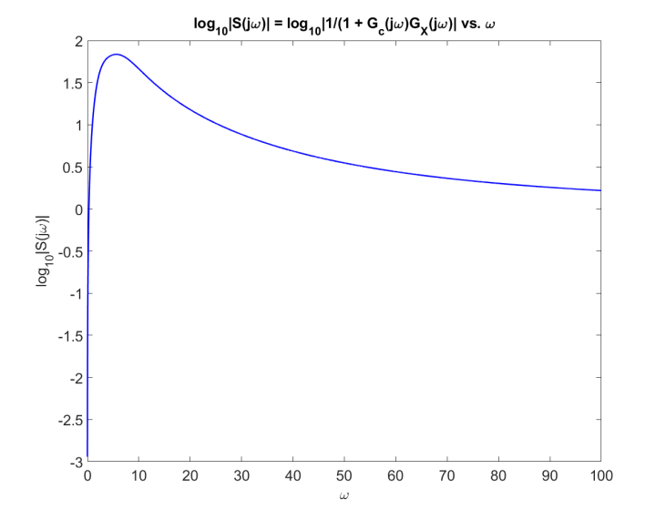
\(S(j\omega )=\dfrac{1}{1+G_{c}(j\omega )G_{X}(j\omega )}\)
\(S(j\omega )=\dfrac{1}{1+G_{c}(j\omega )G_{X}(j\omega )}\)
\(G_{c}(j\omega )\) proper & \(G_{X}(j\omega )\) strictly proper \(\implies \lim_{\omega \rightarrow \infty }|G_{c}(j\omega )G_{X}(j\omega )|=0\) and so \[\lim_{\omega \rightarrow \infty }\log _{10}|S(j\omega )|=\lim_{\omega \rightarrow \infty }\log _{10}\left\vert \dfrac{1}{1+G_{c}(j\omega )G_{X}(j\omega )}\right\vert =0.\]
\(\lim_{\omega \rightarrow 0}|G_{X}(j\omega )|=\infty \implies \lim_{\omega \rightarrow 0}|G_{c}(j\omega )G_{X}(j\omega )|=\infty\) and so \[\lim_{\omega \rightarrow 0}\log _{10}|S(j\omega )|=\lim_{\omega \rightarrow 0}\log _{10}\left\vert \dfrac{1}{1+G_{c}(j\omega )G_{X}(j\omega )} \right\vert =-\infty .\]
The theorem tells us that \(|S(j\omega )|=\left\vert \dfrac{1}{ 1+G_{c}(j\omega )G_{X}(j\omega )}\right\vert\) has more positive area than negative area.
This positive area must be at lower frequencies as \(\lim_{\omega \rightarrow \infty }\log _{10}|S(j\omega )|=0\).
Any stabilizing controller \(G_{c}(s)\) must result in \[\int_{0}^{\infty }\log _{10}|S(j\omega )|d\omega \geq \pi \log _{10}(e)(5.408)=7.38.\]
The sensitivity integral gives a fundamental limitation to design a \(G_{c}(s)\) to reduce \(|S(j\omega )|.\)
Summary
Any unity feedback controller (slide the earlier derivation) for \(G_{X}(s)=\dfrac{ 1.59s^{2}-36.57}{s^{2}(s^{2}-29.25)}\) will result in a large sensitivity. In practice this system is impossible to control!
Right half-plane poles result in the closed-loop sensitivity being large.
Right half-plane zeros close to right half-plane poles demonstrate this as well.
Recall \(G_{c}(s)G_{X}(s)\) for the inverted pendulum is \[G_{c}(s)G_{X}(s)=4262\frac{(s+5.4086)(s-0.3668)(s+0.2533)}{ (s+96.4235)(s-66.2137)(s+4.7902)}1.59\frac{(s-4.7958)(s+4.7958)}{ s^{2}(s-5.408)(s+5.408)}.\]
\(G_{c}(s)G_{X}(s)\) has an open RHP pole at \(p_{1}=5.408\) from \(G_{X}(s)\) and
an open RHP pole at \(p_{2}=66.2137\) from \(G_{c}(s)\).
\(G_{c}(s)G_{X}(s)\) has an open RHP zero at \(z_{1}=4.7958\) from \(G_{X}(s)\) and
an open RHP zero at \(z_{2}=0.3668\) from \(G_{c}(s)\).
There is a Poisson integral for each zero in the open RHP:
\[\begin{aligned} I(z_1)&\triangleq \int_{0}^{\infty }\log _{10}|S(j\omega )| \frac{z_{1}}{z_{1}^{2}+\omega ^{2}}\,d\omega \\ &=-\pi \log _{10}(e)\left[ \log _{10}\left\vert \frac{z_{1}-p_{1}}{z_{1}+p_{1}}\right\vert +\log _{10}\left\vert \frac{z_{1}-p_{2}}{z_{1}+p_{2}}\right\vert \right],\\[0.35em] I(z_2)&\triangleq \int_{0}^{\infty }\log _{10}|S(j\omega )| \frac{z_{2}}{z_{2}^{2}+\omega ^{2}}\,d\omega \\ &=-\pi \log _{10}(e)\left[ \log _{10}\left\vert \frac{z_{2}-p_{1}}{z_{2}+p_{1}}\right\vert +\log _{10}\left\vert \frac{z_{2}-p_{2}}{z_{2}+p_{2}}\right\vert \right]. \end{aligned}\]
Evaluating the Poisson integral for \(z_{1}\) gives \[\begin{aligned} \int_{0}^{\infty }\log _{10}|S(j\omega )|\frac{4.7958}{ (4.7958)^{2}+\omega ^{2}}d\omega &=-\pi \log _{10}(e)\left( \log _{10}\left\vert \frac{4.7958-5.408}{4.7958+5.408} \right\vert +\log _{10}\left\vert \frac{4.7958-66.2137}{4.7958+66.2137} \right\vert \right) \\ &=-\pi \log _{10}(e)\left( -1.222-0.063\right) =1.753. \end{aligned}\]
Multiplying both sides by \(z_{1}=4.7958\) to obtain \[\int_{0}^{\infty }\log _{10}|S(j\omega )|\frac{1}{1+(\omega /4.7958)^{2}} d\omega =(1.753)(4.7958)=8.41.\]
No matter what (stabilizing) controller is designed we have \[\int_{0}^{\infty }\log _{10}|S(j\omega )|\frac{1}{1+(\omega /4.7958)^{2}} d\omega \geq -\pi \log _{10}(e)\left( -1.222\right) (4.7958)=7.996.\]
due to the RHP pole and zero of \(G_{X}(s).\)
Further, as \(\dfrac{1}{1+(\omega /4.7958)^{2}}\) drops off rapidly towards \(0\) for \(\omega >z_{1}=4.7958,|S(j\omega )|\) must be large at the lower frequencies in order to satisfy the inequality.
A different scheme (i.e., not just feedback of \(x\)) is needed to control the inverted pendulum.
\(y(t)=x(t)+\left( \ell +\frac{J}{ m\ell }\right) \theta (t)\)
\[\begin{aligned} Y(s) &=X(s)+\left( \ell +\frac{J}{m\ell }\right) \theta (s) \\ &=\frac{\kappa (J+m\ell ^{2})s^{2}-\kappa mg\ell }{s^{2}(s^{2}-\alpha ^{2})}U(s) -\kappa \left( \ell +\frac{J}{m\ell }\right) \frac{m\ell s^{2}}{s^{2}(s^{2}-\alpha ^{2})}U(s) \\ &\quad+\frac{\left( (J/(m\ell )+\ell )s^{2}-\kappa g(m\ell )^{2}\right) (s\theta (0)+\dot{\theta}(0))+(s^{2}-\alpha ^{2})(sx(0)+\dot{x}(0))} {s^{2}(s^{2}-\alpha ^{2})} \\ &=\underset{G_{Y}(s)}{\underbrace{-\frac{\kappa mg\ell }{s^{2}(s^{2}-\alpha ^{2})}}}U(s)+\frac{p_{Y}(s)}{s^{2}(s^{2}-\alpha ^{2})}. \end{aligned}\]
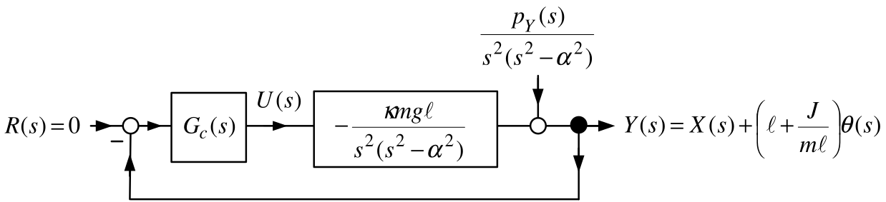
- Note that \(G_{Y}(s)\) has no right half-plane zeros.
\(y(t)=x(t)+\left( \ell +\frac{J}{ m\ell }\right) \theta (t)\)
Using the Quanser parameter values (\(\kappa mg\ell =36.57,\alpha ^{2}=29.26\)) \[G_{Y}(s)=\frac{-36.57}{s^{2}(s^{2}-29.26)}=\frac{-36.57}{ s^{2}(s+5.409)(s-5.409)}.\]
To arbitrarily place the closed-loop poles let \(G_{c}(s)\) have the form \[G_{c}(s)=\dfrac{b_{c}(s)}{a_{c}(s)}=\frac{b_{3}s^{3}+b_{2}s^{2}+b_{1}s+b_{0} }{s^{3}+a_{2}s^{2}+a_{1}s+a_{0}}.\]
Choosing the closed-loop poles to be at \(-5\) results in \[\begin{aligned} G_{c}(s) &=-\frac{1041.6s^{3}+6113.7s^{2}+2990.8s+2136.3}{ s^{3}+35s^{2}+554.3s+5399} \\ &=-1041.6\frac{(s+5.409)(s^{2}+0.46s+0.3792)}{ (s+20.835)(s^{2}+14.17s+259.13)}. \end{aligned}\]
- Note that \(G_{c}(s)\) also has no RHP poles or zeros.
\(y(t)=x(t)+\left( \ell +\frac{J}{ m\ell }\right) \theta (t)\)
\[G_{c}(s)G_{Y}(s)=-1041.6\frac{(s+5.409)(s^{2}+0.46s+0.3792)}{ (s+20.835)(s^{2}+14.17s+259.13)}\frac{-36.57}{s^{2}(s+5.409)(s-5.409)}.\]
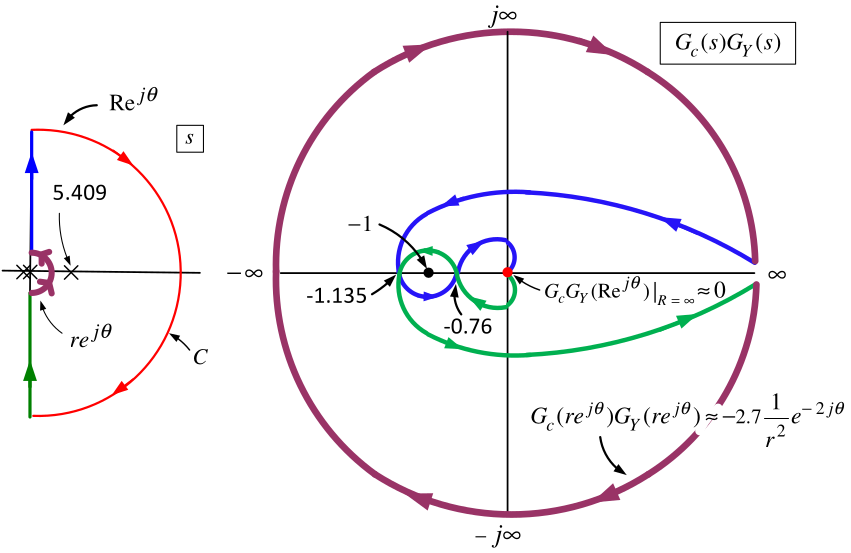
The closed-loop transfer function \(\dfrac{KG_{c}(s)G_{Y}(s)}{ 1+KG_{c}(s)G_{Y}(s)}\) is stable for \[-1.135<-\dfrac{1}{K}<-0.78\qquad\text{or}\qquad 0.881=\frac{1}{1.135}<K<\frac{1}{ 0.78}=1.282,\]
Gain margin is still small (compare with \(0.980\,<K<1.019\) using \(x\) as output).
The phase margin turns out to be about \(7^{\circ }\) (\(1.15^{\circ }\) using \(x\) as output).
\(y(t)=x(t)+\left( \ell +\frac{J}{ m\ell }\right) \theta (t)\)
\[G_{c}(s)G_{Y}(s)=-1041.6\frac{(s+5.409)(s^{2}+0.46s+0.3792)}{ (s+20.835)(s^{2}+14.17s+259.13)}\frac{-36.57}{s^{2}(s+5.409)(s-5.409)}.\]
Only one pole in the open RHP.
No zeros in the open RHP.
\(\int_{0}^{\infty }\log _{10}|S(j\omega )|d\omega =\pi \log _{10}(e)\left( 5.409\right) =\pi \log _{10}(e)\left( 5.409\right) =7.38.\)
\(\max\limits_{\omega \geq 0}\{\log _{10}|S(j\omega )|\}=0.94\), or \(\max\limits_{\omega \geq 0}\{|S(j\omega )|\}=8.7.\)
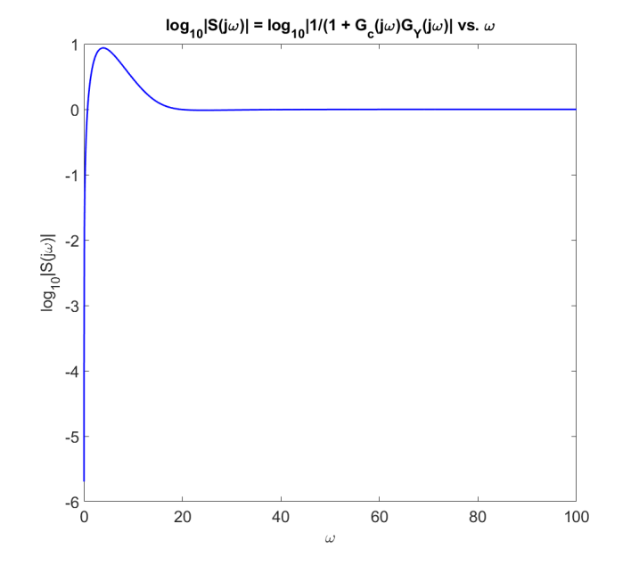
\[\begin{aligned} \underset{dz/dt}{\underbrace{\left[ \begin{array}{c} dx/dt \\ dv/dt \\ d\theta /dt \\ d\omega /dt \end{array} \right] }} &=\underset{A}{\underbrace{\left[ \begin{array}{cccc} 0 & 1 & 0 & 0 \\ 0 & 0 & -\kappa gm^{2}\ell ^{2} & 0 \\ 0 & 0 & 0 & 1 \\ 0 & 0 & \kappa mg\ell (M+m) & 0 \end{array} \right] }}\underset{z}{\underbrace{\left[ \begin{array}{c} x \\ v \\ \theta \\ \omega \end{array} \right] }}+\underset{b}{\underbrace{\left[ \begin{array}{c} 0 \\ \kappa (J+m\ell ^{2}) \\ 0 \\ -\kappa m\ell \end{array} \right] }}u \\ u(t) &=-\left[ \begin{array}{cccc} k_{1} & k_{2} & k_{3} & k_{4} \end{array} \right] \underset{z(t)}{\underbrace{\left[ \begin{array}{c} x(t) \\ v(t) \\ \theta (t) \\ \omega (t) \end{array} \right] }} \end{aligned}\]

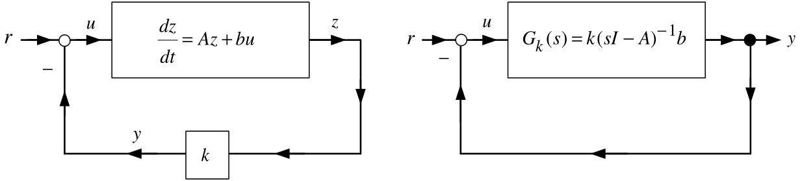
Let \(y=kz\) and \(G_{k}(s)\triangleq k(sI-A)^{-1}b.\)
Choose \(k\in \mathbb{R} ^{1\times 5}\) to place the closed-loop poles at \(-5.\) \[\begin{aligned} k &=\left[ \begin{array}{cccc} -29.0255 & -23.2204 & -56.4917 & -12.0901 \end{array} \right] \\ G_{k}(s)=k(sI-A)^{-1}b &=\frac{20s^{3}+179.3s^{2}+500s+625}{s^{4}-29.3s^{2}} &=\frac{20(s+5.41)(s^{2}+3.55s+5.777)}{s^{2}(s+5.409)(s-5.409)}. \end{aligned}\]
Note that \(G_{k}(s)\) has no right half-plane zeros.
\(G_{k}(s)\) has a single pole in the open right-half plane at \(5.409\).
\[G_{k}(s)=k(sI-A)^{-1}b=\frac{20(s+5.41)(s^{2}+3.55s+5.777)}{ s^{2}(s+5.409)(s-5.409)}.\]
The pole at \(5.409\) of \(G_{c}(s)G_{k}(s)\) is inside the Nyquist contour so \(P=1.\)
The Nyquist plot goes around \(-1+j0\) once in the CCW direction so \(N=-1.\)
\(Z=N+P=0\) showing the closed-loop system is stable (as we already knew!).
\(\dfrac{K_{gain}G_{k}(s)}{1+K_{gain}G_{k}(s)}\) is stable for \(-2.83<-1/K_{gain}<0\) or \(K_{gain}>1/2.83=0.353.\)
Using Matlab the phase margin is \(64^{\circ }.\)
\[G_{k}(s)=k(sI-A)^{-1}b=\frac{20(s+5.41)(s^{2}+3.55s+5.777)}{ s^{2}(s+5.409)(s-5.409)}.\]
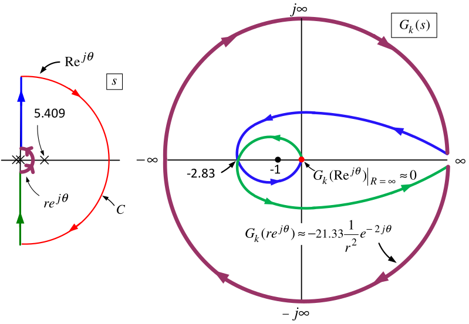
The sensitivity function is \(S_{k}(j\omega )=\dfrac{1}{1+G_{k}(j\omega )}.\)
\(G_{k}(s)\) has one right half-plane pole and no right half-plane zeros.
However \(G_{k}(s)\) has relative degree 1 so the previous sensitivity theorems do not apply!
Theorem \(\ \int_{0}^{\infty }\log _{10}|S(j\omega )|d\omega =\log _{10}(e)\left( -\eta \dfrac{\pi }{2}+\pi \sum\nolimits_{i=1}^{N_{p}}\operatorname{Re} \{p_{i}\}\right)\)
Define \[\begin{aligned} S(j\omega ) &\triangleq &\frac{1}{1+\underset{L(j\omega )}{\underbrace{ G_{c}(j\omega )G(j\omega )}}} \\ \eta &\triangleq &\lim_{s\rightarrow \infty }sG_{c}(s)G(s). \end{aligned}\] Suppose
(a) \(S(j\omega )\) is stable,
(b) \(L(j\omega )=G_{c}(j\omega )G(j\omega )\) has \(n_{p}\) poles in the open RHP at \(p_{1},p_{2},...,p_{n_{p}}\) and
(c) \(L(j\omega )=G_{c}(j\omega )G(j\omega )=\dfrac{b_{c}(j\omega )b(j\omega ) }{a_{c}(j\omega )a(j\omega )}\) has relative degree 1 or greater.
Then \[\int_{0}^{\infty }\log _{10}|S(j\omega )|d\omega =\log _{10}(e)\left( -\eta \dfrac{\pi }{2}+\pi \sum\limits_{i=1}^{N_{p}}\operatorname{Re}\{p_{i}\}\right) .\] Note \(\log _{10}(e)=0.434\).
\[G_{k}(s)=\frac{20s^{3}+179.3s^{2}+500s+625}{s^{4}-29.3s^{2}}=\frac{ 20(s+5.41)(s^{2}+3.55s+5.777)}{s^{2}(s+5.409)(s-5.409)}.\]
The sensitivity function is \(S_{k}(j\omega )=\dfrac{1}{1+G_{k}(j\omega )}.\)
\(G_{k}(s)\) has one right half-plane pole and no right half-plane zeros.
\(G_{k}(s)\) has relative degree 1.
\(\eta \triangleq \lim_{s\rightarrow \infty }sG_{k}(s)=20\). \[\int_{0}^{\infty }\log _{10}|S_{k}(j\omega )|d\omega =\log _{10}(e)\left( -20 \dfrac{\pi }{2}+\pi (5.409)\right) =-6.264.\]
The integral of the logarithm of the sensitivity is negative!
We do not expect \(|S_{k}(j\omega )|\) to be large. If fact, \(\max\limits_{\omega \geq 0}|S_{k}(j\omega )|\leq 1!\)
However this is the sensitivity of the output \[y=kz=k_{1}x+k_{2}v+k_{3}\theta +k_{4}\omega .\]
We are really interested in the sensitivity of the output \(\theta !\)
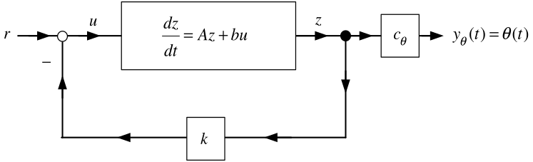
\[\frac{dz}{dt}=Az+bu,u=-kz+r,y_{\theta }=\underset{ c_{\theta }}{\underbrace{\left[ \begin{array}{cccc} 0 & 0 & 1 & 0 \end{array} \right] }}\underset{z}{\underbrace{\left[ \begin{array}{c} x \\ v \\ \theta \\ \omega \end{array} \right] }}\] \[\frac{\theta (s)}{R(s)}=G_{\theta }(s)=c_{\theta }\left( sI- (A-bk)\right) ^{-1}b=-\frac{m\kappa \ell s^{2}}{(s+5)^{4}}.\]
With the Quanser values for \(m,\kappa ,\ell\) it turns out that \(\max\limits_{\omega \geq 0}|G_{\theta }(j\omega )|\leq 0.032.\)
Disturbances \(d(t)\) acting at the input \(u(t)\) result in small changes in \(\theta (t).\)
If there is a step disturbance \(d(t)=D_{0}u_{s}(t)\) at the input then \[\lim_{t\rightarrow \infty }\theta (t)=\lim_{s\rightarrow 0}sG_{\theta }(s) \frac{D_{0}}{s}=\lim_{s\rightarrow 0}-\frac{m\kappa \ell s}{(s+5)^{4}} D_{0}=0.\]
The pendulum rod angle is still kept at \(\theta =0!\)
Let’s look at the sensitivity of adding an integrator to the state feedback scheme.

With \(c=\left[ \begin{array}{cccc} 1 & 0 & 0 & 0 \end{array} \right]\) and \(G_{k}(s)\triangleq c(sI-(A-bk))^{-1}b\) we have
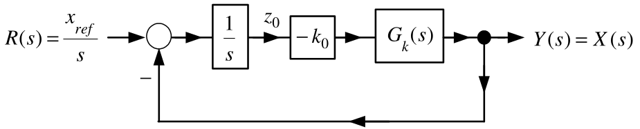
\(k_{a}=\left[ \begin{array}{cc} k & k_{0} \end{array} \right] =\left[ \begin{array}{ccccc} -85.4514 & -37.9043 & -111.4406 & -22.9103 & 85.4514 \end{array} \right]\)
puts all of the CL poles at \(-5\) and \[\begin{aligned} G_{k}(s)=c(sI-(A-bk))^{-1}b &=\frac{1.59s^{2}-36.57}{ s^{4}+25s^{3}+250s^{2}+1386s+3125} \\ &=1.59\frac{(s+4.7958)(s-4.7958)}{ (s+13.5367)(s+1.2474)(s^{2}+10.216s+9.0599)}. \end{aligned}\]
With \(G_{k_{0}}(s)\triangleq -\dfrac{k_{0}}{s},\) the sensitivity function is \[S(s)=\frac{1}{1+G_{k_{0}}(s)G_{k}(s)}=\frac{1}{1+\dfrac{-k_{0}}{s}G_{k}(s)}.\]
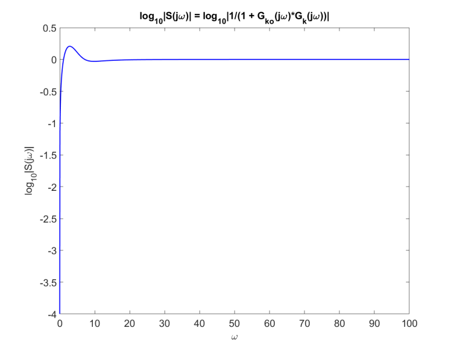
- \(\max_{\omega }|S(j\omega )|=1.6092\) (\(0.2066\) dB) at \(\omega =2.88.\)
Let’s compute the closed-loop transfer function from \(R(s)\) to \(\theta (s)\).

The statespace setup is \[\begin{aligned} \frac{d}{dt}\underset{z_{a}\in \mathbb{R} ^{5}}{\underbrace{\left[ \begin{array}{c} z \\ z_{0} \end{array} \right] }} &=\underset{A_{a}\in \mathbb{R} ^{5\times 5}}{\underbrace{\left[ \begin{array}{rl} A & 0_{4\times 1} \\ -c & 0 \end{array} \right] }}\underset{z_{a}\in \mathbb{R} ^{5}}{\underbrace{\left[ \begin{array}{c} z \\ z_{0} \end{array} \right] }}+\underset{b_{a}\in \mathbb{R} ^{5}}{\underbrace{\left[ \begin{array}{c} b \\ 0 \end{array} \right] }}u \\ u &=-\underset{k_{a}\in \mathbb{R} ^{1\times 5}}{\underbrace{\left[ \begin{array}{cc} k & k_{0} \end{array} \right] }}\underset{z_{a}\in \mathbb{R} ^{5}}{\underbrace{\left[ \begin{array}{c} z \\ z_{0} \end{array} \right] }}+r. \\ y_{\theta } &=\theta =\underset{c_{\theta a}\in \mathbb{R} ^{1\times 5}}{\underbrace{\left[ \begin{array}{ccccc} 0 & 0 & 1 & 0 & 0 \end{array} \right] }}\left[ \begin{array}{c} z \\ z_{0} \end{array} \right] . \end{aligned}\]
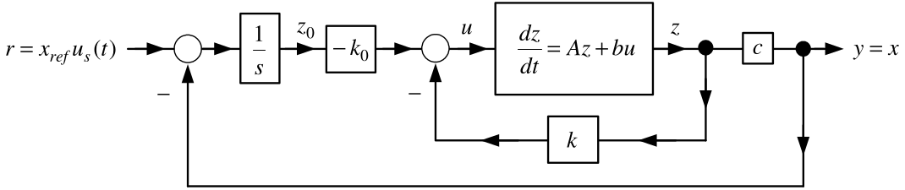
The CL TF from \(R(s)\) to \(\theta (s)\) is (\(m\kappa \ell =3.728\)) \[G_{\theta }(s)=\frac{Y_{\theta }(s)}{R(s)}=c_{\theta a}\left( sI_{5\times 5}-(A_{a}-b_{a}k_{a})\right) ^{-1}b_{a}= \frac{-m\kappa \ell s^{3}}{\left( s+5\right) ^{5}}.\]
Using Matlab one finds \(\max_{\omega \geq 0}|G_{\theta }(j\omega )|\leq 0.028.\)
The pendulum rod angle \(\theta\) is not sensitive to step reference inputs.
The output is \(y=x+\left( \ell +\dfrac{J}{m\ell }\right) \theta .\) An observer estimates \(z=\left[ \begin{array}{cccc} x & v & \theta & \omega \end{array} \right] ^{T}.\)
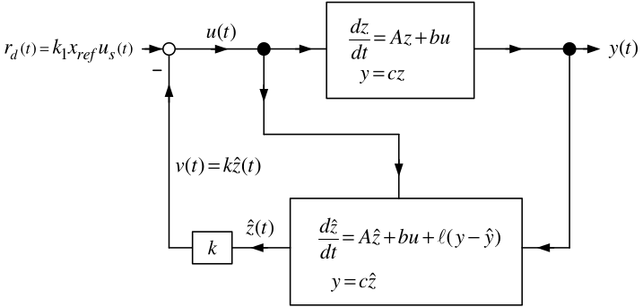
\[\begin{aligned} \underset{dz/dt}{\underbrace{\left[ \begin{array}{c} dx/dt \\ dv/dt \\ d\theta /dt \\ d\omega /dt \end{array} \right] }} &=\underset{A}{\underbrace{\left[ \begin{array}{cccc} 0 & 1 & 0 & 0 \\ 0 & 0 & -\dfrac{gm^{2}\ell ^{2}}{Mm\ell ^{2}+J(M+m)} & 0 \\ 0 & 0 & 0 & 1 \\ 0 & 0 & \dfrac{mg\ell (M+m)}{Mm\ell ^{2}+J(M+m)} & 0 \end{array} \right] }}\underset{z}{\underbrace{\left[ \begin{array}{c} x \\ v \\ \theta \\ \omega \end{array} \right] }}+\underset{b}{\underbrace{\left[ \begin{array}{c} 0 \\ \dfrac{J+m\ell ^{2}}{Mm\ell ^{2}+J(M+m)} \\ 0 \\ -\dfrac{m\ell }{Mm\ell ^{2}+J(M+m)} \end{array} \right] }}u \\ y &=\left[ \begin{array}{cccc} 1 & 0 & \ell +\dfrac{J}{m\ell } & 0 \end{array} \right] \left[ \begin{array}{c} x \\ v \\ \theta \\ \omega \end{array} \right] . \end{aligned}\]
In the Laplace domain the block diagram becomes
\[\begin{aligned} G(s) &=\frac{b(s)}{a(s)}=c(sI-A)^{-1}b, \\ G_{c1}(s) &=\frac{n(s)}{\delta (s)}=k(sI-(A-\ell c))^{-1}b, \\ G_{c2}(s) &=\frac{m(s)}{\delta (s)}=k(sI-(A-\ell c))^{-1}\ell . \end{aligned}\]
Choose \(k\) to place all four poles of \(A-bk\) at \(-5.\)
Choose \(\ell\) to place the four poles of \(A-\ell c\) at \(-10.\)
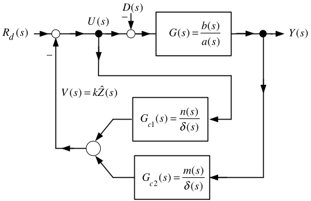
\[\begin{aligned} G(s) &=c(sI-A)^{-1}b=\frac{b(s)}{a(s)}=\frac{-36.5705}{s^{4}-29.2564s^{2}}, \\[0.35em] G_{c1}(s) &=k(sI-(A-\ell c))^{-1}b=\frac{n(s)}{\delta (s)}=\frac{ 20s^{3}+979.2564s^{2}+2.0255+236830}{s^{4}+40s^{3}+600s^{2}+4000s+10000} \\ G_{c2}(s) &=k(sI-(A-\ell c))^{-1}\ell =\frac{m(s)}{\delta (s)}=\frac{ -50167s^{3}-303420s^{2}-205080s-170900}{s^{4}+40s^{3}+600s^{2}+4000s+10000}. \end{aligned}\] Block diagram reduction gives

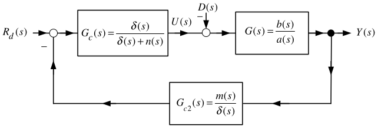
\[\begin{aligned} G_{c}(s)&=\frac{\delta (s)}{\delta (s)+n(s)} \\ &=\frac{s^{4}+40s^{3}+600s^{2}+4000s+10000} {s^{4}+60s^{3}+1579.3s^{2}+4000s+246830} \\ &=\frac{s^{4}+40s^{3}+600s^{2}+4000s+10000} {(s^{2}+63.3642s+1642.2)(s^{2}-3.364s+150.31)}. \end{aligned}\]
The transfer function from \(D(s)\) to \(Y(s)\) is
\[\begin{aligned} \frac{Y(s)}{D(s)} &=-\frac{G(s)}{1+G_{c}(s)G_{c2}(s)G(s)} \\ &=-\frac{b(s)/a(s)}{1+\dfrac{m(s)}{\delta (s)+n(s)}\dfrac{b(s)}{a(s)}} =S(s)\frac{b(s)}{a(s)}. \end{aligned}\]

The sensitivity function is
\[\begin{aligned} S(s)&\triangleq \frac{1}{1+\dfrac{m(s)}{\delta (s)+n(s)}\dfrac{b(s)}{a(s)}} \\ &=\frac{1}{1+ \dfrac{(s+5.408854)(s^{2}+0.63934s+0.62982)} {(s^{2}+63.3642s+1642.2)(s^{2}-3.364s+150.31)} \dfrac{36.5705}{s^{2}(s^{2}-29.2564)}}, \\[0.4em] \int_{0}^{\infty }\log _{10}|S(j\omega )|d\omega &=\pi \log _{10}(e)\left( 3.364+\sqrt{29.2564}\right) =16.6. \end{aligned}\]
The output \(y=x+\left( \ell +\dfrac{J}{m\ell }\right) \theta\) is very sensitive to input disturbances.
Using an observer to estimate the state is still an output feedback controller.
The RHP poles of \(G_{c}(s)G_{c2}(s)=\dfrac{m(s)}{\delta (s)+n(s)}\) and \(G(s)=\dfrac{b(s)}{a(s)}\) tell us to expect the sensitivity to be large.

← Course Home · System Modeling and Control · Chapter 17